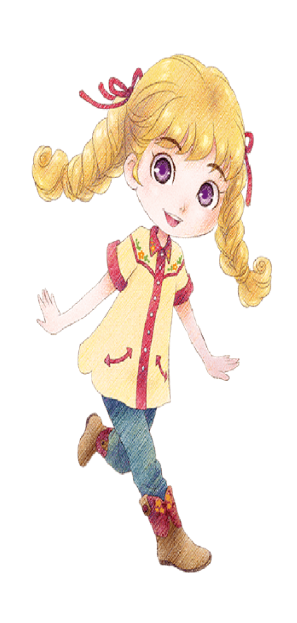
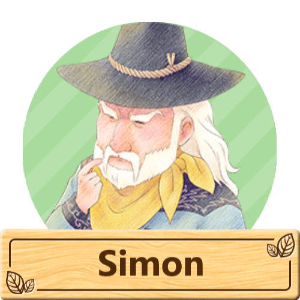
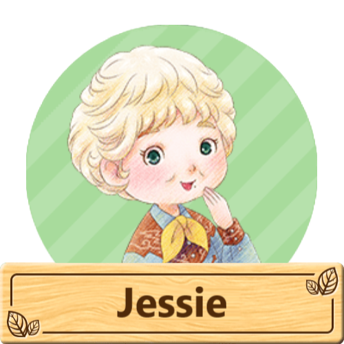
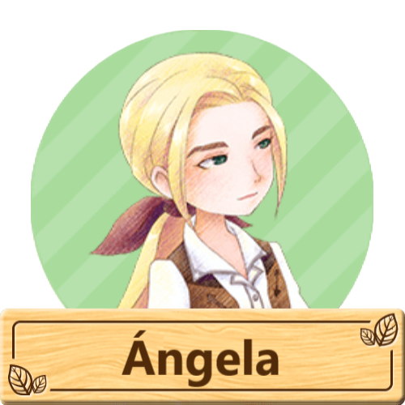
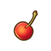
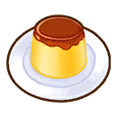

Cindy



"La hermana menor de Jack. Quiere heredar la tienda y ser tan servicial con todos como su madre. Es inteligente y madura para su edad, pero como cualquier niño, tiene debilidad por los dulces, como el flan de miel".
Cindy es un personaje de Story of Seasons: Pioneers of Olive Town.
Cindy es la hija de Ángela y la hermana menor de Jack. Aunque es joven, desea poder ayudar más en la tienda de la familia y a menudo se le ocurren ideas de nuevos productos para vender. Quiere hacerse cargo del negocio familiar algún día cuando sea mayor.
Tiene más o menos la misma edad que Mikey y los dos suelen jugar juntos. Dosetsu le da clases particulares y disfruta regando las flores que hay fuera de la Floristería Nguyen con Linh. Con la ayuda de Mikey, ayuda a organizar la búsqueda anual de setas.
Cumpleaños | 01 de Invierno | |||
|---|---|---|---|---|
| Familia |
 Abuelo |
 Abuela |
 Madre |
Hermano |
Horario |
Martes a Domingo | Cindy empezará su día en la Bazar de ciudad Oliva de 06:30 - 09:00, para luego dirigirse al Floristería Nguyen de 09:45 - 12:00, luego volvera a la Bazar de ciudad Oliva de 13:00 - 14:00, para luego dirigirse al Seishin-an de 15:30 - 18:00 y finalmente se quedara por el resto del día en la Bazar de ciudad Oliva llegando a las 19:30. |
|---|---|---|
| Lunes | Cindy empezará su día en la Bazar de ciudad Oliva de 06:30 - 09:00, para luego dirigirse al Floristería Nguyen de 09:45 - 12:00, luego volvera a la Bazar de ciudad Oliva de 13:00 - 14:00, para luego dirigirse al Parque de 15:15 - 18:00 y finalmente se quedara por el resto del día en la Bazar de ciudad Oliva llegando a las 19:00. | |
Cualquier día
   |
Cindy estara todo el día en la Bazar de ciudad Oliva. | |
Nota: Puede conocer mejor sobre los lugares disponibles que hay en el juego y lo puede consultar en la sección de lugares. | ||
Preferencias de regalo
La mejor forma de mejorar la amistad y el afecto con los aldeanos o candidatos a matrimonio es siempre regalarles las cosas que le gusta una vez por día, aqui se mustra los regalos que puedes darle a este personaje.
|
😍
Fasina
|
 Mermeladade cereza  Flande miel  Sopa decereza agria  Marcha deprimavera  Bebida deyogur |
|---|---|
|
🙂
Encanta
|
 Vals de lasllamas  Cereza  Flande café  Conciertode la tierra  Pulsera ala moda  Medallónenjoyado  Anilloenjoyado  Nocturno deluz de luna  Flan  Ramoarcoíris  Relojbrillante  Ensaladade espinacas Tulipán  Rondó floresde invierno  Yogur |
|
😐
Gusta
|
 Tela de lanade alpaca  Lana dealpaca  Lana dealpaca +  Ovillo de lanade alpaca  Mermeladade manzana  Mermeladade plátano  Batido deplátano  Tela de lanade alpaca marrón  Lana dealpaca marrón  Lana dealpaca marrón +  Ovillo de lanade alpaca marrón  Mermeladade coco  Fruit au lait  Perfumefrutal  Mermeladade uvas  Tela de pelode conejo gris  Pelo deconejo gris  Pelo deconejo gris +  Ovillo de pelode conejo gris  Mermeladade limón  Mermeladade mango  Mermeladade melón  Mermeladade naranja  Mermeladade melocotón  Mermeladade piña  Tela de pelode conejo rosa  Pelo deconejo rosa  Pelo deconejo rosa +  Ovillo de pelode conejo rosa  Tela de pelode conejo  Pelo deconejo  Pelo deconejo +  Ovillo de pelode conejo  Mermeladade fresa  Batido defresa  Tela de lanade oveja suffolk  Lana deoveja suffolk  Lana deoveja suffolk +  Ovillo de lanade oveja suffolk  Mermeladade sandía  Lana deoveja  Lana deoveja +  Tela de lanade oveja  Ovillo de lanade oveja |
| Nota: Todos los regalos que no estan aquí son considerados neutrales para el personaje. | |
Eventos del personaje
Cada evento que ocurra el jugador podrá conecer más sobre el personaje, algunos eventos son partes de la historia del juego y otras son eventos extras que puedes hacer.